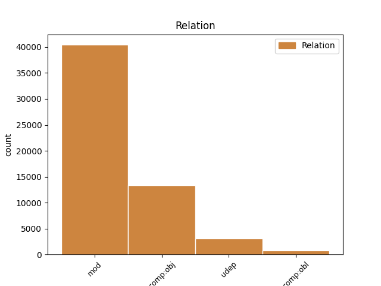
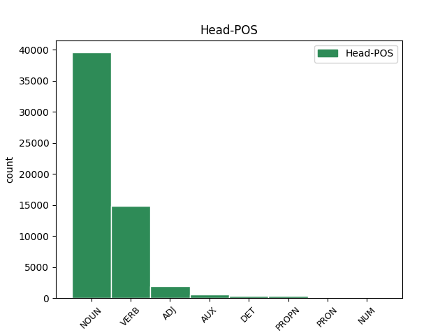
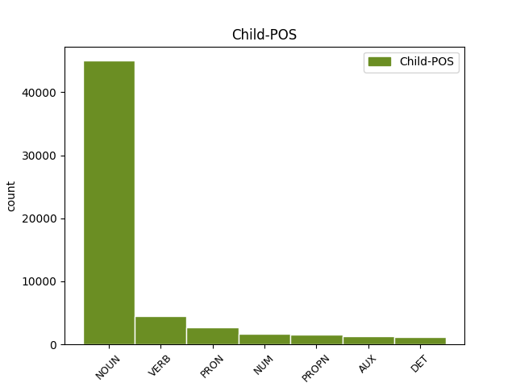

Distribution of features within this leaf



Agreement Rules sorted by frequency.
- When the dependent token is the modifer(mod) of the head token, and the dependent token is NOUN.
1 Naproti _ _ _ _ 0 _ _ _
2 tomu _ _ _ _ 0 _ _ _
3 prvky _ _ _ _ 0 _ _ _
4 , _ _ _ _ 0 _ _ _
5 kterým _ _ _ _ 0 _ _ _
6 chybí _ _ _ _ 0 _ _ _
7 jeden _ _ _ _ 0 _ _ _
8 obvodový _ _ _ _ 0 _ _ _
9 elektron _ _ _ _ 0 _ _ _
10 do _ _ _ _ 0 _ _ _
11 úplného _ _ _ _ 0 _ _ _
12 obsazení _ _ _ _ 0 _ _ _
13 krajní _ _ _ _ 0 _ _ _
14 slupky _ _ _ _ 0 _ _ _
15 a _ _ _ _ 0 _ _ _
16 tvoří _ _ _ _ 0 _ _ _
17 jednomocné _ _ _ _ 0 _ _ _
18 záporné _ _ _ _ 0 _ _ _
19 ionty _ _ _ _ 0 _ _ _
20 a _ _ _ _ 0 _ _ _
21 vznikající _ _ _ _ 0 _ _ _
22 připoutáním připoutání NOUN NNNS7-----A---- Case=Ins|Gender=Neut|Number=Sing|Polarity=Pos 0 _ _ _
23 dalšího _ _ _ _ 0 _ _ _
24 elektronu elektron NOUN NNIS2-----A---- Animacy=Inan|Case=Gen|Gender=Masc|Number=Sing|Polarity=Pos 22 mod _ SpaceAfter=No
25 . _ _ _ _ 0 _ _ _
1 Naproti _ _ _ _ 0 _ _ _
2 tomu _ _ _ _ 0 _ _ _
3 prvky _ _ _ _ 0 _ _ _
4 , _ _ _ _ 0 _ _ _
5 kterým _ _ _ _ 0 _ _ _
6 chybí _ _ _ _ 0 _ _ _
7 jeden _ _ _ _ 0 _ _ _
8 obvodový _ _ _ _ 0 _ _ _
9 elektron _ _ _ _ 0 _ _ _
10 do _ _ _ _ 0 _ _ _
11 úplného _ _ _ _ 0 _ _ _
12 obsazení _ _ _ _ 0 _ _ _
13 krajní _ _ _ _ 0 _ _ _
14 slupky _ _ _ _ 0 _ _ _
15 a _ _ _ _ 0 _ _ _
16 tvoří tvořit VERB VB-P---3P-AA--- Aspect=Imp|Mood=Ind|Number=Plur|Person=3|Polarity=Pos|Tense=Pres|VerbForm=Fin|Voice=Act 0 _ _ _
17 jednomocné _ _ _ _ 0 _ _ _
18 záporné _ _ _ _ 0 _ _ _
19 ionty iont NOUN NNIP4-----A---- Animacy=Inan|Case=Acc|Gender=Masc|Number=Plur|Polarity=Pos 16 comp:obj _ _
20 a _ _ _ _ 0 _ _ _
21 vznikající _ _ _ _ 0 _ _ _
22 připoutáním _ _ _ _ 0 _ _ _
23 dalšího _ _ _ _ 0 _ _ _
24 elektronu _ _ _ _ 0 _ _ _
25 . _ _ _ _ 0 _ _ _
1 Prvky _ _ _ _ 0 _ _ _
2 s _ _ _ _ 0 _ _ _
3 jedním _ _ _ _ 0 _ _ _
4 obvodovým _ _ _ _ 0 _ _ _
5 elektronem _ _ _ _ 0 _ _ _
6 tvoří _ _ _ _ 0 _ _ _
7 kladné _ _ _ _ 0 _ _ _
8 jednomocné _ _ _ _ 0 _ _ _
9 ionty iont NOUN NNIP4-----A---- Animacy=Inan|Case=Acc|Gender=Masc|Number=Plur|Polarity=Pos 0 _ _ _
10 , _ _ _ _ 0 _ _ _
11 které _ _ _ _ 0 _ _ _
12 vzniknou vzniknout VERB VB-P---3P-AA--- Aspect=Perf|Mood=Ind|Number=Plur|Person=3|Polarity=Pos|Tense=Pres|VerbForm=Fin|Voice=Act 9 mod _ _
13 odtržením _ _ _ _ 0 _ _ _
14 tohoto _ _ _ _ 0 _ _ _
15 elektronu _ _ _ _ 0 _ _ _
16 . _ _ _ _ 0 _ _ _
1 Naproti _ _ _ _ 0 _ _ _
2 tomu _ _ _ _ 0 _ _ _
3 prvky _ _ _ _ 0 _ _ _
4 , _ _ _ _ 0 _ _ _
5 kterým _ _ _ _ 0 _ _ _
6 chybí _ _ _ _ 0 _ _ _
7 jeden jeden NUM ClYS1---------- Case=Nom|Gender=Masc|Number=Sing|NumForm=Word|NumType=Card|NumValue=1,2,3 9 mod _ LNumValue=1
8 obvodový _ _ _ _ 0 _ _ _
9 elektron elektron NOUN NNIS1-----A---- Animacy=Inan|Case=Nom|Gender=Masc|Number=Sing|Polarity=Pos 0 _ _ _
10 do _ _ _ _ 0 _ _ _
11 úplného _ _ _ _ 0 _ _ _
12 obsazení _ _ _ _ 0 _ _ _
13 krajní _ _ _ _ 0 _ _ _
14 slupky _ _ _ _ 0 _ _ _
15 a _ _ _ _ 0 _ _ _
16 tvoří _ _ _ _ 0 _ _ _
17 jednomocné _ _ _ _ 0 _ _ _
18 záporné _ _ _ _ 0 _ _ _
19 ionty _ _ _ _ 0 _ _ _
20 a _ _ _ _ 0 _ _ _
21 vznikající _ _ _ _ 0 _ _ _
22 připoutáním _ _ _ _ 0 _ _ _
23 dalšího _ _ _ _ 0 _ _ _
24 elektronu _ _ _ _ 0 _ _ _
25 . _ _ _ _ 0 _ _ _
1 Čáry _ _ _ _ 0 _ _ _
2 jsou _ _ _ _ 0 _ _ _
3 měkčí _ _ _ _ 0 _ _ _
4 než _ _ _ _ 0 _ _ _
5 * _ _ _ _ 0 _ _ _
6 , _ _ _ _ 0 _ _ _
7 neboť _ _ _ _ 0 _ _ _
8 vznikají vznikat VERB VB-P---3P-AA--- Aspect=Imp|Mood=Ind|Number=Plur|Person=3|Polarity=Pos|Tense=Pres|VerbForm=Fin|Voice=Act 0 _ _ _
9 přeskoky přeskok NOUN NNIP7-----A---- Animacy=Inan|Case=Ins|Gender=Masc|Number=Plur|Polarity=Pos 8 udep _ _
10 elektronů _ _ _ _ 0 _ _ _
11 do _ _ _ _ 0 _ _ _
12 sféry _ _ _ _ 0 _ _ _
13 dvojkvantové _ _ _ _ 0 _ _ _
14 . _ _ _ _ 0 _ _ _
1 Kopalovy _ _ _ _ 0 _ _ _
2 výsledky _ _ _ _ 0 _ _ _
3 je _ _ _ _ 0 _ _ _
4 možné _ _ _ _ 0 _ _ _
5 aplikovat _ _ _ _ 0 _ _ _
6 na _ _ _ _ 0 _ _ _
7 těsné _ _ _ _ 0 _ _ _
8 dvojhvězdy _ _ _ _ 0 _ _ _
9 a _ _ _ _ 0 _ _ _
10 na _ _ _ _ 0 _ _ _
11 soustavu soustava NOUN NNFS4-----A---- Case=Acc|Gender=Fem|Number=Sing|Polarity=Pos 0 _ _ _
12 Země Země PROPN NNFS1-----A---- Case=Nom|Gender=Fem|NameType=Geo|Number=Sing|Polarity=Pos 11 mod _ SpaceAfter=No
13 , _ _ _ _ 0 _ _ _
14 Měsíc _ _ _ _ 0 _ _ _
15 . _ _ _ _ 0 _ _ _
1 Všechny všechno PRON PLFP1---------- Case=Nom|Gender=Fem|Number=Plur|PronType=Tot 2 mod _ _
2 periody perioda NOUN NNFP1-----A---- Case=Nom|Gender=Fem|Number=Plur|Polarity=Pos 0 _ _ _
3 končí _ _ _ _ 0 _ _ _
4 nultým _ _ _ _ 0 _ _ _
5 sloupcem _ _ _ _ 0 _ _ _
6 , _ _ _ _ 0 _ _ _
7 v _ _ _ _ 0 _ _ _
8 němž _ _ _ _ 0 _ _ _
9 jsou _ _ _ _ 0 _ _ _
10 prvky _ _ _ _ 0 _ _ _
11 s _ _ _ _ 0 _ _ _
12 nulovou _ _ _ _ 0 _ _ _
13 valencí _ _ _ _ 0 _ _ _
14 , _ _ _ _ 0 _ _ _
15 které _ _ _ _ 0 _ _ _
16 netvoří _ _ _ _ 0 _ _ _
17 sloučeniny _ _ _ _ 0 _ _ _
18 . _ _ _ _ 0 _ _ _
1 Jsou _ _ _ _ 0 _ _ _
2 to _ _ _ _ 0 _ _ _
3 vzácné _ _ _ _ 0 _ _ _
4 , _ _ _ _ 0 _ _ _
5 netečné _ _ _ _ 0 _ _ _
6 neboli _ _ _ _ 0 _ _ _
7 inertní _ _ _ _ 0 _ _ _
8 plyny plyn NOUN NNIP1-----A---- Animacy=Inan|Case=Nom|Gender=Masc|Number=Plur|Polarity=Pos 0 _ _ _
9 , _ _ _ _ 0 _ _ _
10 jejichž _ _ _ _ 0 _ _ _
11 molekuly _ _ _ _ 0 _ _ _
12 jsou být AUX VB-P---3P-AA--- Mood=Ind|Number=Plur|Person=3|Polarity=Pos|Tense=Pres|VerbForm=Fin|Voice=Act 8 mod _ _
13 jednoatomové _ _ _ _ 0 _ _ _
14 . _ _ _ _ 0 _ _ _
1 U _ _ _ _ 0 _ _ _
2 složitějších _ _ _ _ 0 _ _ _
3 atomů _ _ _ _ 0 _ _ _
4 jsou _ _ _ _ 0 _ _ _
5 spektrální _ _ _ _ 0 _ _ _
6 čáry _ _ _ _ 0 _ _ _
7 určeny _ _ _ _ 0 _ _ _
8 energetickými _ _ _ _ 0 _ _ _
9 stavy _ _ _ _ 0 _ _ _
10 atomu _ _ _ _ 0 _ _ _
11 , _ _ _ _ 0 _ _ _
12 které _ _ _ _ 0 _ _ _
13 nazýváme _ _ _ _ 0 _ _ _
14 rovněž _ _ _ _ 0 _ _ _
15 termy _ _ _ _ 0 _ _ _
16 a _ _ _ _ 0 _ _ _
17 značíme značit VERB VB-P---1P-AA--- Aspect=Imp|Mood=Ind|Number=Plur|Person=1|Polarity=Pos|Tense=Pres|VerbForm=Fin|Voice=Act 0 _ _ _
18 je on PRON PPXP4--3------- Case=Acc|Number=Plur|Person=3|PronType=Prs 17 comp:obj _ LGloss=(oni/ono)
19 velkými _ _ _ _ 0 _ _ _
20 písmeny _ _ _ _ 0 _ _ _
21 na _ _ _ _ 0 _ _ _
22 rozdíl _ _ _ _ 0 _ _ _
23 od _ _ _ _ 0 _ _ _
24 malých _ _ _ _ 0 _ _ _
25 písmen _ _ _ _ 0 _ _ _
26 , _ _ _ _ 0 _ _ _
27 jimiž _ _ _ _ 0 _ _ _
28 označujeme _ _ _ _ 0 _ _ _
29 dráhy _ _ _ _ 0 _ _ _
30 hladiny _ _ _ _ 0 _ _ _
31 elektronu _ _ _ _ 0 _ _ _
32 . _ _ _ _ 0 _ _ _
1 Řada _ _ _ _ 0 _ _ _
2 desátá _ _ _ _ 0 _ _ _
3 společně _ _ _ _ 0 _ _ _
4 s _ _ _ _ 0 _ _ _
5 neukončenou _ _ _ _ 0 _ _ _
6 skupinou _ _ _ _ 0 _ _ _
7 transuranových _ _ _ _ 0 _ _ _
8 prvků _ _ _ _ 0 _ _ _
9 , _ _ _ _ 0 _ _ _
10 prvků _ _ _ _ 0 _ _ _
11 za _ _ _ _ 0 _ _ _
12 uranem _ _ _ _ 0 _ _ _
13 , _ _ _ _ 0 _ _ _
14 které který DET P4YP4---------- Case=Acc|Gender=Masc|Number=Plur|PronType=Int,Rel 15 comp:obj _ _
15 dělíme dělit VERB VB-P---1P-AA--- Aspect=Imp|Mood=Ind|Number=Plur|Person=1|Polarity=Pos|Tense=Pres|VerbForm=Fin|Voice=Act 0 _ _ _
16 na _ _ _ _ 0 _ _ _
17 uranidy _ _ _ _ 0 _ _ _
18 a _ _ _ _ 0 _ _ _
19 curiedy _ _ _ _ 0 _ _ _
20 , _ _ _ _ 0 _ _ _
21 tvoří _ _ _ _ 0 _ _ _
22 neukončenou _ _ _ _ 0 _ _ _
23 druhou _ _ _ _ 0 _ _ _
24 čtyřnásobnou _ _ _ _ 0 _ _ _
25 periodu _ _ _ _ 0 _ _ _
26 . _ _ _ _ 0 _ _ _
1 U _ _ _ _ 0 _ _ _
2 složitějších _ _ _ _ 0 _ _ _
3 atomů _ _ _ _ 0 _ _ _
4 jsou _ _ _ _ 0 _ _ _
5 spektrální _ _ _ _ 0 _ _ _
6 čáry _ _ _ _ 0 _ _ _
7 určeny _ _ _ _ 0 _ _ _
8 energetickými _ _ _ _ 0 _ _ _
9 stavy _ _ _ _ 0 _ _ _
10 atomu _ _ _ _ 0 _ _ _
11 , _ _ _ _ 0 _ _ _
12 které _ _ _ _ 0 _ _ _
13 nazýváme nazývat VERB VB-P---1P-AA--- Aspect=Imp|Mood=Ind|Number=Plur|Person=1|Polarity=Pos|Tense=Pres|VerbForm=Fin|Voice=Act 0 _ _ _
14 rovněž _ _ _ _ 0 _ _ _
15 termy term NOUN NNIP1-----A---- Animacy=Inan|Case=Nom|Gender=Masc|Number=Plur|Polarity=Pos 13 comp:obl _ _
16 a _ _ _ _ 0 _ _ _
17 značíme _ _ _ _ 0 _ _ _
18 je _ _ _ _ 0 _ _ _
19 velkými _ _ _ _ 0 _ _ _
20 písmeny _ _ _ _ 0 _ _ _
21 na _ _ _ _ 0 _ _ _
22 rozdíl _ _ _ _ 0 _ _ _
23 od _ _ _ _ 0 _ _ _
24 malých _ _ _ _ 0 _ _ _
25 písmen _ _ _ _ 0 _ _ _
26 , _ _ _ _ 0 _ _ _
27 jimiž _ _ _ _ 0 _ _ _
28 označujeme _ _ _ _ 0 _ _ _
29 dráhy _ _ _ _ 0 _ _ _
30 hladiny _ _ _ _ 0 _ _ _
31 elektronu _ _ _ _ 0 _ _ _
32 . _ _ _ _ 0 _ _ _
1 Jinak _ _ _ _ 0 _ _ _
2 řečeno _ _ _ _ 0 _ _ _
3 , _ _ _ _ 0 _ _ _
4 ion _ _ _ _ 0 _ _ _
5 vznikne vzniknout VERB VB-S---3P-AA--- Aspect=Perf|Mood=Ind|Number=Sing|Person=3|Polarity=Pos|Tense=Pres|VerbForm=Fin|Voice=Act 0 _ _ _
6 z _ _ _ _ 0 _ _ _
7 neutrálního _ _ _ _ 0 _ _ _
8 atomu _ _ _ _ 0 _ _ _
9 tím ten DET PDZS7---------- Case=Ins|Gender=Masc,Neut|Number=Sing|PronType=Dem 5 udep _ SpaceAfter=No
10 , _ _ _ _ 0 _ _ _
11 že _ _ _ _ 0 _ _ _
12 se _ _ _ _ 0 _ _ _
13 změní _ _ _ _ 0 _ _ _
14 počet _ _ _ _ 0 _ _ _
15 jeho _ _ _ _ 0 _ _ _
16 elektronů _ _ _ _ 0 _ _ _
17 tak _ _ _ _ 0 _ _ _
18 , _ _ _ _ 0 _ _ _
19 aby _ _ _ _ 0 _ _ _
20 by _ _ _ _ 0 _ _ _
21 elektronový _ _ _ _ 0 _ _ _
22 obal _ _ _ _ 0 _ _ _
23 dosáhl _ _ _ _ 0 _ _ _
24 nejbližší _ _ _ _ 0 _ _ _
25 stabilní _ _ _ _ 0 _ _ _
26 konfigurace _ _ _ _ 0 _ _ _
27 . _ _ _ _ 0 _ _ _
1 Necháme _ _ _ _ 0 _ _ _
2 - _ _ _ _ 0 _ _ _
3 li _ _ _ _ 0 _ _ _
4 stranou _ _ _ _ 0 _ _ _
5 některé _ _ _ _ 0 _ _ _
6 praktické _ _ _ _ 0 _ _ _
7 aplikace _ _ _ _ 0 _ _ _
8 modelování _ _ _ _ 0 _ _ _
9 složitých _ _ _ _ 0 _ _ _
10 potenciálů _ _ _ _ 0 _ _ _
11 těles _ _ _ _ 0 _ _ _
12 , _ _ _ _ 0 _ _ _
13 ukazují ukazovat VERB VB-P---3P-AA--- Aspect=Imp|Mood=Ind|Number=Plur|Person=3|Polarity=Pos|Tense=Pres|VerbForm=Fin|Voice=Act 0 _ _ _
14 nám já PRON PP-P3--1------- Case=Dat|Number=Plur|Person=1|PronType=Prs 13 comp:obl _ _
15 práce _ _ _ _ 0 _ _ _
16 tohoto _ _ _ _ 0 _ _ _
17 druhu _ _ _ _ 0 _ _ _
18 , _ _ _ _ 0 _ _ _
19 které _ _ _ _ 0 _ _ _
20 závěry _ _ _ _ 0 _ _ _
21 nebeské _ _ _ _ 0 _ _ _
22 mechaniky _ _ _ _ 0 _ _ _
23 jsou _ _ _ _ 0 _ _ _
24 důsledkem _ _ _ _ 0 _ _ _
25 speciálních _ _ _ _ 0 _ _ _
26 předpokladů _ _ _ _ 0 _ _ _
27 a _ _ _ _ 0 _ _ _
28 které _ _ _ _ 0 _ _ _
29 mají _ _ _ _ 0 _ _ _
30 obecnější _ _ _ _ 0 _ _ _
31 platnost _ _ _ _ 0 _ _ _
32 . _ _ _ _ 0 _ _ _
1 Výsledky _ _ _ _ 0 _ _ _
2 jsou _ _ _ _ 0 _ _ _
3 v _ _ _ _ 0 _ _ _
4 * _ _ _ _ 0 _ _ _
5 a _ _ _ _ 0 _ _ _
6 ukazují ukazovat VERB VB-P---3P-AA--- Aspect=Imp|Mood=Ind|Number=Plur|Person=3|Polarity=Pos|Tense=Pres|VerbForm=Fin|Voice=Act 0 _ _ _
7 názorně _ _ _ _ 0 _ _ _
8 , _ _ _ _ 0 _ _ _
9 jak _ _ _ _ 0 _ _ _
10 se _ _ _ _ 0 _ _ _
11 mění měnit VERB VB-P---3P-AA--- Aspect=Imp|Mood=Ind|Number=Plur|Person=3|Polarity=Pos|Tense=Pres|VerbForm=Fin|Voice=Act 6 comp:obj _ _
12 v _ _ _ _ 0 _ _ _
13 závislosti _ _ _ _ 0 _ _ _
14 na _ _ _ _ 0 _ _ _
15 sklonu _ _ _ _ 0 _ _ _
16 a _ _ _ _ 0 _ _ _
17 pro _ _ _ _ 0 _ _ _
18 * _ _ _ _ 0 _ _ _
19 váha _ _ _ _ 0 _ _ _
20 jednotlivých _ _ _ _ 0 _ _ _
21 kmitočtů _ _ _ _ 0 _ _ _
22 v _ _ _ _ 0 _ _ _
23 celkovém _ _ _ _ 0 _ _ _
24 * _ _ _ _ 0 _ _ _
25 . _ _ _ _ 0 _ _ _
1 Toto _ _ _ _ 0 _ _ _
2 je _ _ _ _ 0 _ _ _
3 podle _ _ _ _ 0 _ _ _
4 některých _ _ _ _ 0 _ _ _
5 autorů _ _ _ _ 0 _ _ _
6 typická _ _ _ _ 0 _ _ _
7 vlastnost _ _ _ _ 0 _ _ _
8 aktivních _ _ _ _ 0 _ _ _
9 jevů _ _ _ _ 0 _ _ _
10 pozorovaných _ _ _ _ 0 _ _ _
11 v _ _ _ _ 0 _ _ _
12 okolí _ _ _ _ 0 _ _ _
13 druhého _ _ _ _ 0 _ _ _
14 maxima _ _ _ _ 0 _ _ _
15 cyklu _ _ _ _ 0 _ _ _
16 prosazovaného prosazovaný ADJ AAIS2----1A---- Animacy=Inan|Case=Gen|Degree=Pos|Gender=Masc|Number=Sing|Polarity=Pos 0 _ _ _
17 Gněvyševem Gněvyšev PROPN NNMS7-----A---- Animacy=Anim|Case=Ins|Gender=Masc|NameType=Sur|Number=Sing|Polarity=Pos 16 comp:obj _ SpaceAfter=No
18 . _ _ _ _ 0 _ _ _
1 Tyto _ _ _ _ 0 _ _ _
2 značky _ _ _ _ 0 _ _ _
3 jsou _ _ _ _ 0 _ _ _
4 počáteční _ _ _ _ 0 _ _ _
5 písmena _ _ _ _ 0 _ _ _
6 anglických _ _ _ _ 0 _ _ _
7 slov _ _ _ _ 0 _ _ _
8 sharp _ _ _ _ 0 _ _ _
9 , _ _ _ _ 0 _ _ _
10 ostrý _ _ _ _ 0 _ _ _
11 , _ _ _ _ 0 _ _ _
12 principal _ _ _ _ 0 _ _ _
13 , _ _ _ _ 0 _ _ _
14 hlavní _ _ _ _ 0 _ _ _
15 , _ _ _ _ 0 _ _ _
16 diffuse _ _ _ _ 0 _ _ _
17 , _ _ _ _ 0 _ _ _
18 difusní _ _ _ _ 0 _ _ _
19 , _ _ _ _ 0 _ _ _
20 fundamental _ _ _ _ 0 _ _ _
21 , _ _ _ _ 0 _ _ _
22 základní _ _ _ _ 0 _ _ _
23 , _ _ _ _ 0 _ _ _
24 jimiž jenž PRON PJXP7---------- Case=Ins|Number=Plur|PrepCase=Npr|PronType=Rel 26 udep _ LGloss=(který_[ve_vedl.větě])
25 se _ _ _ _ 0 _ _ _
26 označují označovat VERB VB-P---3P-AA--- Aspect=Imp|Mood=Ind|Number=Plur|Person=3|Polarity=Pos|Tense=Pres|VerbForm=Fin|Voice=Act 0 _ _ _
27 série _ _ _ _ 0 _ _ _
28 čar _ _ _ _ 0 _ _ _
29 a _ _ _ _ 0 _ _ _
30 * _ _ _ _ 0 _ _ _
31 . _ _ _ _ 0 _ _ _
1 To _ _ _ _ 0 _ _ _
2 umožní _ _ _ _ 0 _ _ _
3 porovnat _ _ _ _ 0 _ _ _
4 různé _ _ _ _ 0 _ _ _
5 metody _ _ _ _ 0 _ _ _
6 a _ _ _ _ 0 _ _ _
7 na _ _ _ _ 0 _ _ _
8 základě základ NOUN NNIS6-----A---- Animacy=Inan|Case=Loc|Gender=Masc|Number=Sing|Polarity=Pos 0 _ _ _
9 toho ten DET PDZS2---------- Case=Gen|Gender=Masc,Neut|Number=Sing|PronType=Dem 8 mod _ _
10 navrhnout _ _ _ _ 0 _ _ _
11 a _ _ _ _ 0 _ _ _
12 vyzkoušet _ _ _ _ 0 _ _ _
13 účinné _ _ _ _ 0 _ _ _
14 způsoby _ _ _ _ 0 _ _ _
15 . _ _ _ _ 0 _ _ _
1 Necháme _ _ _ _ 0 _ _ _
2 - _ _ _ _ 0 _ _ _
3 li _ _ _ _ 0 _ _ _
4 stranou _ _ _ _ 0 _ _ _
5 některé _ _ _ _ 0 _ _ _
6 praktické _ _ _ _ 0 _ _ _
7 aplikace _ _ _ _ 0 _ _ _
8 modelování _ _ _ _ 0 _ _ _
9 složitých _ _ _ _ 0 _ _ _
10 potenciálů _ _ _ _ 0 _ _ _
11 těles _ _ _ _ 0 _ _ _
12 , _ _ _ _ 0 _ _ _
13 ukazují ukazovat VERB VB-P---3P-AA--- Aspect=Imp|Mood=Ind|Number=Plur|Person=3|Polarity=Pos|Tense=Pres|VerbForm=Fin|Voice=Act 0 _ _ _
14 nám _ _ _ _ 0 _ _ _
15 práce _ _ _ _ 0 _ _ _
16 tohoto _ _ _ _ 0 _ _ _
17 druhu _ _ _ _ 0 _ _ _
18 , _ _ _ _ 0 _ _ _
19 které _ _ _ _ 0 _ _ _
20 závěry _ _ _ _ 0 _ _ _
21 nebeské _ _ _ _ 0 _ _ _
22 mechaniky _ _ _ _ 0 _ _ _
23 jsou být AUX VB-P---3P-AA--- Mood=Ind|Number=Plur|Person=3|Polarity=Pos|Tense=Pres|VerbForm=Fin|Voice=Act 13 comp:obj _ _
24 důsledkem _ _ _ _ 0 _ _ _
25 speciálních _ _ _ _ 0 _ _ _
26 předpokladů _ _ _ _ 0 _ _ _
27 a _ _ _ _ 0 _ _ _
28 které _ _ _ _ 0 _ _ _
29 mají _ _ _ _ 0 _ _ _
30 obecnější _ _ _ _ 0 _ _ _
31 platnost _ _ _ _ 0 _ _ _
32 . _ _ _ _ 0 _ _ _
1 Zvolíme _ _ _ _ 0 _ _ _
2 - _ _ _ _ 0 _ _ _
3 li _ _ _ _ 0 _ _ _
4 pro _ _ _ _ 0 _ _ _
5 pasívní _ _ _ _ 0 _ _ _
6 gravitační _ _ _ _ 0 _ _ _
7 hmotnost _ _ _ _ 0 _ _ _
8 stejnou _ _ _ _ 0 _ _ _
9 jednotku _ _ _ _ 0 _ _ _
10 jako _ _ _ _ 0 _ _ _
11 pro _ _ _ _ 0 _ _ _
12 aktivní _ _ _ _ 0 _ _ _
13 gravitační _ _ _ _ 0 _ _ _
14 hmotnost _ _ _ _ 0 _ _ _
15 , _ _ _ _ 0 _ _ _
16 je _ _ _ _ 0 _ _ _
17 tento _ _ _ _ 0 _ _ _
18 poměr _ _ _ _ 0 _ _ _
19 rovný rovný ADJ AAIS1----1A---- Animacy=Inan|Case=Nom|Degree=Pos|Gender=Masc|Number=Sing|Polarity=Pos 0 _ _ _
20 jedné jeden NUM ClFS3---------- Case=Dat|Gender=Fem|Number=Sing|NumForm=Word|NumType=Card|NumValue=1,2,3 19 comp:obj _ LNumValue=1
21 a _ _ _ _ 0 _ _ _
22 platí _ _ _ _ 0 _ _ _
23 * _ _ _ _ 0 _ _ _
24 . _ _ _ _ 0 _ _ _
1 Není _ _ _ _ 0 _ _ _
2 ovšem _ _ _ _ 0 _ _ _
3 pravda _ _ _ _ 0 _ _ _
4 , _ _ _ _ 0 _ _ _
5 že _ _ _ _ 0 _ _ _
6 pracovat _ _ _ _ 0 _ _ _
7 kladivem _ _ _ _ 0 _ _ _
8 umí umět VERB VB-S---3P-AA--- Mood=Ind|Number=Sing|Person=3|Polarity=Pos|Tense=Pres|VerbForm=Fin|Voice=Act 0 _ _ _
9 každý každý DET AAMS1----1A---- Animacy=Anim|Case=Nom|Degree=Pos|Gender=Masc|Number=Sing|Polarity=Pos|PronType=Tot 8 comp:obl _ _
10 sám _ _ _ _ 0 _ _ _
11 od _ _ _ _ 0 _ _ _
12 sebe _ _ _ _ 0 _ _ _
13 , _ _ _ _ 0 _ _ _
14 dokazují _ _ _ _ 0 _ _ _
15 to _ _ _ _ 0 _ _ _
16 potlučené _ _ _ _ 0 _ _ _
17 prsty _ _ _ _ 0 _ _ _
18 . _ _ _ _ 0 _ _ _
1 Drobný _ _ _ _ 0 _ _ _
2 spotřebitel _ _ _ _ 0 _ _ _
3 kupuje _ _ _ _ 0 _ _ _
4 prkna _ _ _ _ 0 _ _ _
5 , _ _ _ _ 0 _ _ _
6 fošny _ _ _ _ 0 _ _ _
7 , _ _ _ _ 0 _ _ _
8 hranoly _ _ _ _ 0 _ _ _
9 , _ _ _ _ 0 _ _ _
10 latě _ _ _ _ 0 _ _ _
11 , _ _ _ _ 0 _ _ _
12 lišty _ _ _ _ 0 _ _ _
13 hranaté _ _ _ _ 0 _ _ _
14 nebo _ _ _ _ 0 _ _ _
15 profilované _ _ _ _ 0 _ _ _
16 a _ _ _ _ 0 _ _ _
17 desky _ _ _ _ 0 _ _ _
18 z _ _ _ _ 0 _ _ _
19 dřevitých _ _ _ _ 0 _ _ _
20 hmot _ _ _ _ 0 _ _ _
21 v _ _ _ _ 0 _ _ _
22 prodejnách _ _ _ _ 0 _ _ _
23 označených označený ADJ AAFP6----1A---- Case=Loc|Degree=Pos|Gender=Fem|Number=Plur|Polarity=Pos 0 _ _ _
24 Stavebniny Stavebniny PROPN NNFP1-----A---- Case=Nom|Gender=Fem|NameType=Com|Number=Plur|Polarity=Pos 23 udep _ _
25 a _ _ _ _ 0 _ _ _
26 Potřeby _ _ _ _ 0 _ _ _
27 pro _ _ _ _ 0 _ _ _
28 domácnost _ _ _ _ 0 _ _ _
29 . _ _ _ _ 0 _ _ _
1 Kromě _ _ _ _ 0 _ _ _
2 sympatií _ _ _ _ 0 _ _ _
3 rodičů _ _ _ _ 0 _ _ _
4 rozhodují _ _ _ _ 0 _ _ _
5 samozřejmě _ _ _ _ 0 _ _ _
6 i _ _ _ _ 0 _ _ _
7 mocenské _ _ _ _ 0 _ _ _
8 zájmy _ _ _ _ 0 _ _ _
9 , _ _ _ _ 0 _ _ _
10 protože _ _ _ _ 0 _ _ _
11 ve _ _ _ _ 0 _ _ _
12 hře _ _ _ _ 0 _ _ _
13 jsou _ _ _ _ 0 _ _ _
14 rozsáhlá _ _ _ _ 0 _ _ _
15 území _ _ _ _ 0 _ _ _
16 , _ _ _ _ 0 _ _ _
17 jako _ _ _ _ 0 _ _ _
18 například _ _ _ _ 0 _ _ _
19 Akvitánie _ _ _ _ 0 _ _ _
20 , _ _ _ _ 0 _ _ _
21 dědické _ _ _ _ 0 _ _ _
22 léno _ _ _ _ 0 _ _ _
23 královny _ _ _ _ 0 _ _ _
24 Eleanory _ _ _ _ 0 _ _ _
25 , _ _ _ _ 0 _ _ _
26 které _ _ _ _ 0 _ _ _
27 Jindřich _ _ _ _ 0 _ _ _
28 daroval darovat VERB VpYS---XR-AA--- Aspect=Imp|Gender=Masc|Number=Sing|Polarity=Pos|Tense=Past|VerbForm=Part|Voice=Act 0 _ _ _
29 Richardovi Richard PROPN NNMS3-----A---- Animacy=Anim|Case=Dat|Gender=Masc|NameType=Giv|Number=Sing|Polarity=Pos 28 comp:obl _ SpaceAfter=No
30 , _ _ _ _ 0 _ _ _
31 a _ _ _ _ 0 _ _ _
32 zájmy _ _ _ _ 0 _ _ _
33 ryze _ _ _ _ 0 _ _ _
34 osobní _ _ _ _ 0 _ _ _
35 jako _ _ _ _ 0 _ _ _
36 králův _ _ _ _ 0 _ _ _
37 vztah _ _ _ _ 0 _ _ _
38 k _ _ _ _ 0 _ _ _
39 princezně _ _ _ _ 0 _ _ _
40 Alici _ _ _ _ 0 _ _ _
41 , _ _ _ _ 0 _ _ _
42 královnina _ _ _ _ 0 _ _ _
43 touha _ _ _ _ 0 _ _ _
44 po _ _ _ _ 0 _ _ _
45 svobodě _ _ _ _ 0 _ _ _
46 , _ _ _ _ 0 _ _ _
47 ctižádost _ _ _ _ 0 _ _ _
48 všech _ _ _ _ 0 _ _ _
49 tří _ _ _ _ 0 _ _ _
50 synů _ _ _ _ 0 _ _ _
51 . _ _ _ _ 0 _ _ _
1 Zpracovatelské _ _ _ _ 0 _ _ _
2 kapacity _ _ _ _ 0 _ _ _
3 jsou _ _ _ _ 0 _ _ _
4 charakterizovány _ _ _ _ 0 _ _ _
5 základní _ _ _ _ 0 _ _ _
6 technologickou _ _ _ _ 0 _ _ _
7 skladbou _ _ _ _ 0 _ _ _
8 strojů _ _ _ _ 0 _ _ _
9 a _ _ _ _ 0 _ _ _
10 zařízení _ _ _ _ 0 _ _ _
11 vyjádřenou vyjádřený ADJ AAFS7----1A---- Case=Ins|Degree=Pos|Gender=Fem|Number=Sing|Polarity=Pos 0 _ _ _
12 zhruba _ _ _ _ 0 _ _ _
13 třetinou třetina NUM CyFS7---------- Case=Ins|Gender=Fem|Number=Sing|NumType=Frac 11 udep _ _
14 pro _ _ _ _ 0 _ _ _
15 oplášťování _ _ _ _ 0 _ _ _
16 kabelů _ _ _ _ 0 _ _ _
17 , _ _ _ _ 0 _ _ _
18 třetinou _ _ _ _ 0 _ _ _
19 pro _ _ _ _ 0 _ _ _
20 vstřikování _ _ _ _ 0 _ _ _
21 a _ _ _ _ 0 _ _ _
22 # _ _ _ _ 0 _ _ _
23 činí _ _ _ _ 0 _ _ _
24 lisování _ _ _ _ 0 _ _ _
25 a _ _ _ _ 0 _ _ _
26 protlačování _ _ _ _ 0 _ _ _
27 . _ _ _ _ 0 _ _ _
1 Na _ _ _ _ 0 _ _ _
2 stavbu _ _ _ _ 0 _ _ _
3 domků _ _ _ _ 0 _ _ _
4 se _ _ _ _ 0 _ _ _
5 používají _ _ _ _ 0 _ _ _
6 hlavně _ _ _ _ 0 _ _ _
7 první _ _ _ _ 0 _ _ _
8 dvě _ _ _ _ 0 _ _ _
9 kvality _ _ _ _ 0 _ _ _
10 ze _ _ _ _ 0 _ _ _
11 stejného stejný ADJ AAIS2----1A---- Animacy=Inan|Case=Gen|Degree=Pos|Gender=Masc|Number=Sing|Polarity=Pos 0 _ _ _
12 důvodu _ _ _ _ 0 _ _ _
13 , _ _ _ _ 0 _ _ _
14 jak _ _ _ _ 0 _ _ _
15 bylo být AUX VpNS---XR-AA--- Gender=Neut|Number=Sing|Polarity=Pos|Tense=Past|VerbForm=Part|Voice=Act 11 udep _ _
16 uvedeno _ _ _ _ 0 _ _ _
17 u _ _ _ _ 0 _ _ _
18 portlandského _ _ _ _ 0 _ _ _
19 cementu _ _ _ _ 0 _ _ _
20 . _ _ _ _ 0 _ _ _
1 Existuje _ _ _ _ 0 _ _ _
2 totiž _ _ _ _ 0 _ _ _
3 řada _ _ _ _ 0 _ _ _
4 dat _ _ _ _ 0 _ _ _
5 a _ _ _ _ 0 _ _ _
6 indicií _ _ _ _ 0 _ _ _
7 , _ _ _ _ 0 _ _ _
8 z _ _ _ _ 0 _ _ _
9 nichž _ _ _ _ 0 _ _ _
10 je _ _ _ _ 0 _ _ _
11 možno _ _ _ _ 0 _ _ _
12 hypoteticky _ _ _ _ 0 _ _ _
13 dedukovat _ _ _ _ 0 _ _ _
14 existenci _ _ _ _ 0 _ _ _
15 opevněných _ _ _ _ 0 _ _ _
16 sídel _ _ _ _ 0 _ _ _
17 , _ _ _ _ 0 _ _ _
18 nikoliv _ _ _ _ 0 _ _ _
19 jen _ _ _ _ 0 _ _ _
20 knížecích _ _ _ _ 0 _ _ _
21 sídel _ _ _ _ 0 _ _ _
22 v _ _ _ _ 0 _ _ _
23 rámci _ _ _ _ 0 _ _ _
24 hradišť _ _ _ _ 0 _ _ _
25 , _ _ _ _ 0 _ _ _
26 ještě _ _ _ _ 0 _ _ _
27 dříve _ _ _ _ 0 _ _ _
28 , _ _ _ _ 0 _ _ _
29 než _ _ _ _ 0 _ _ _
30 došlo dojít VERB VpNS---XR-AA--- Gender=Neut|Number=Sing|Polarity=Pos|Tense=Past|VerbForm=Part|Voice=Act 0 _ _ _
31 ke _ _ _ _ 0 _ _ _
32 skutečné _ _ _ _ 0 _ _ _
33 stavební _ _ _ _ 0 _ _ _
34 formaci _ _ _ _ 0 _ _ _
35 hradu _ _ _ _ 0 _ _ _
36 či _ _ _ _ 0 _ _ _
37 tvrze _ _ _ _ 0 _ _ _
38 jako _ _ _ _ 0 _ _ _
39 útvaru _ _ _ _ 0 _ _ _
40 typického _ _ _ _ 0 _ _ _
41 pro _ _ _ _ 0 _ _ _
42 období _ _ _ _ 0 _ _ _
43 počínaje počínat VERB VeYS------A---- Aspect=Imp|Gender=Masc|Number=Sing|Polarity=Pos|Tense=Pres|VerbForm=Conv|Voice=Act 30 udep _ _
44 nástupem _ _ _ _ 0 _ _ _
45 vrcholného _ _ _ _ 0 _ _ _
46 středověku _ _ _ _ 0 _ _ _
47 . _ _ _ _ 0 _ _ _
1 Proto _ _ _ _ 0 _ _ _
2 nepokládám _ _ _ _ 0 _ _ _
3 za _ _ _ _ 0 _ _ _
4 správný _ _ _ _ 0 _ _ _
5 předpoklad _ _ _ _ 0 _ _ _
6 Grundův _ _ _ _ 0 _ _ _
7 , _ _ _ _ 0 _ _ _
8 že _ _ _ _ 0 _ _ _
9 jednu jeden NUM ClFS4---------- Case=Acc|Gender=Fem|Number=Sing|NumForm=Word|NumType=Card|NumValue=1,2,3 32 comp:obl _ LNumValue=1
10 z _ _ _ _ 0 _ _ _
11 variant _ _ _ _ 0 _ _ _
12 , _ _ _ _ 0 _ _ _
13 podle _ _ _ _ 0 _ _ _
14 níž _ _ _ _ 0 _ _ _
15 Erben _ _ _ _ 0 _ _ _
16 motivicky _ _ _ _ 0 _ _ _
17 korigoval _ _ _ _ 0 _ _ _
18 výchozí _ _ _ _ 0 _ _ _
19 text _ _ _ _ 0 _ _ _
20 pohádky _ _ _ _ 0 _ _ _
21 Dlouhý _ _ _ _ 0 _ _ _
22 , _ _ _ _ 0 _ _ _
23 Široký _ _ _ _ 0 _ _ _
24 a _ _ _ _ 0 _ _ _
25 Bystrozraký _ _ _ _ 0 _ _ _
26 , _ _ _ _ 0 _ _ _
27 verzi _ _ _ _ 0 _ _ _
28 žebráckou _ _ _ _ 0 _ _ _
29 , _ _ _ _ 0 _ _ _
30 Erben _ _ _ _ 0 _ _ _
31 jenom _ _ _ _ 0 _ _ _
32 předstírá předstírat VERB VB-S---3P-AA--- Aspect=Imp|Mood=Ind|Number=Sing|Person=3|Polarity=Pos|Tense=Pres|VerbForm=Fin|Voice=Act 0 _ _ _
33 , _ _ _ _ 0 _ _ _
34 že _ _ _ _ 0 _ _ _
35 ji _ _ _ _ 0 _ _ _
36 kdy _ _ _ _ 0 _ _ _
37 měl _ _ _ _ 0 _ _ _
38 a _ _ _ _ 0 _ _ _
39 že _ _ _ _ 0 _ _ _
40 právě _ _ _ _ 0 _ _ _
41 domněle _ _ _ _ 0 _ _ _
42 bájeslovná _ _ _ _ 0 _ _ _
43 místa _ _ _ _ 0 _ _ _
44 pohádky _ _ _ _ 0 _ _ _
45 , _ _ _ _ 0 _ _ _
46 o _ _ _ _ 0 _ _ _
47 něž _ _ _ _ 0 _ _ _
48 opíral _ _ _ _ 0 _ _ _
49 svůj _ _ _ _ 0 _ _ _
50 zidealizovaný _ _ _ _ 0 _ _ _
51 výklad _ _ _ _ 0 _ _ _
52 , _ _ _ _ 0 _ _ _
53 jsou _ _ _ _ 0 _ _ _
54 výplodem _ _ _ _ 0 _ _ _
55 jeho _ _ _ _ 0 _ _ _
56 básnické _ _ _ _ 0 _ _ _
57 představivosti _ _ _ _ 0 _ _ _
58 . _ _ _ _ 0 _ _ _
Disagree Examples:
1 Politický _ _ _ _ 0 _ _ _
2 , _ _ _ _ 0 _ _ _
3 hospodářský _ _ _ _ 0 _ _ _
4 a _ _ _ _ 0 _ _ _
5 kulturní _ _ _ _ 0 _ _ _
6 vývoj _ _ _ _ 0 _ _ _
7 , _ _ _ _ 0 _ _ _
8 jakož _ _ _ _ 0 _ _ _
9 i _ _ _ _ 0 _ _ _
10 rychlý _ _ _ _ 0 _ _ _
11 rozvoj _ _ _ _ 0 _ _ _
12 motorismu _ _ _ _ 0 _ _ _
13 a _ _ _ _ 0 _ _ _
14 cestovního _ _ _ _ 0 _ _ _
15 ruchu _ _ _ _ 0 _ _ _
16 v _ _ _ _ 0 _ _ _
17 naší _ _ _ _ 0 _ _ _
18 socialistické _ _ _ _ 0 _ _ _
19 společnosti _ _ _ _ 0 _ _ _
20 nezbytně _ _ _ _ 0 _ _ _
21 vyžadují vyžadovat VERB VB-P---3P-AA--- Aspect=Imp|Mood=Ind|Number=Plur|Person=3|Polarity=Pos|Tense=Pres|VerbForm=Fin|Voice=Act 0 _ _ _
22 zajištění zajištění NOUN NNNS4-----A---- Case=Acc|Gender=Neut|Number=Sing|Polarity=Pos 21 comp:obj _ LDeriv=zajistit
23 bezpečné _ _ _ _ 0 _ _ _
24 , _ _ _ _ 0 _ _ _
25 rychlé _ _ _ _ 0 _ _ _
26 a _ _ _ _ 0 _ _ _
27 spolehlivé _ _ _ _ 0 _ _ _
28 přepravy _ _ _ _ 0 _ _ _
29 . _ _ _ _ 0 _ _ _
1 Splnění _ _ _ _ 0 _ _ _
2 tohoto _ _ _ _ 0 _ _ _
3 požadavku _ _ _ _ 0 _ _ _
4 umožňuje _ _ _ _ 0 _ _ _
5 vedle _ _ _ _ 0 _ _ _
6 jiných _ _ _ _ 0 _ _ _
7 činitelů _ _ _ _ 0 _ _ _
8 účelná _ _ _ _ 0 _ _ _
9 úprava úprava NOUN NNFS1-----A---- Case=Nom|Gender=Fem|Number=Sing|Polarity=Pos 0 _ _ _
10 Pravidel pravidlo NOUN NNNP2-----A---- Case=Gen|Gender=Neut|Number=Plur|Polarity=Pos 9 mod _ _
11 provozu _ _ _ _ 0 _ _ _
12 na _ _ _ _ 0 _ _ _
13 silnicích _ _ _ _ 0 _ _ _
14 , _ _ _ _ 0 _ _ _
15 která _ _ _ _ 0 _ _ _
16 přispívá _ _ _ _ 0 _ _ _
17 k _ _ _ _ 0 _ _ _
18 plnění _ _ _ _ 0 _ _ _
19 všech _ _ _ _ 0 _ _ _
20 náročných _ _ _ _ 0 _ _ _
21 úkolů _ _ _ _ 0 _ _ _
22 i _ _ _ _ 0 _ _ _
23 k _ _ _ _ 0 _ _ _
24 zabezpečení _ _ _ _ 0 _ _ _
25 ochrany _ _ _ _ 0 _ _ _
26 života _ _ _ _ 0 _ _ _
27 a _ _ _ _ 0 _ _ _
28 zdraví _ _ _ _ 0 _ _ _
29 osob _ _ _ _ 0 _ _ _
30 a _ _ _ _ 0 _ _ _
31 majetku _ _ _ _ 0 _ _ _
32 . _ _ _ _ 0 _ _ _
1 Splnění _ _ _ _ 0 _ _ _
2 tohoto _ _ _ _ 0 _ _ _
3 požadavku _ _ _ _ 0 _ _ _
4 umožňuje _ _ _ _ 0 _ _ _
5 vedle _ _ _ _ 0 _ _ _
6 jiných _ _ _ _ 0 _ _ _
7 činitelů _ _ _ _ 0 _ _ _
8 účelná _ _ _ _ 0 _ _ _
9 úprava _ _ _ _ 0 _ _ _
10 Pravidel pravidlo NOUN NNNP2-----A---- Case=Gen|Gender=Neut|Number=Plur|Polarity=Pos 0 _ _ _
11 provozu provoz NOUN NNIS2-----A---- Animacy=Inan|Case=Gen|Gender=Masc|Number=Sing|Polarity=Pos 10 mod _ _
12 na _ _ _ _ 0 _ _ _
13 silnicích _ _ _ _ 0 _ _ _
14 , _ _ _ _ 0 _ _ _
15 která _ _ _ _ 0 _ _ _
16 přispívá _ _ _ _ 0 _ _ _
17 k _ _ _ _ 0 _ _ _
18 plnění _ _ _ _ 0 _ _ _
19 všech _ _ _ _ 0 _ _ _
20 náročných _ _ _ _ 0 _ _ _
21 úkolů _ _ _ _ 0 _ _ _
22 i _ _ _ _ 0 _ _ _
23 k _ _ _ _ 0 _ _ _
24 zabezpečení _ _ _ _ 0 _ _ _
25 ochrany _ _ _ _ 0 _ _ _
26 života _ _ _ _ 0 _ _ _
27 a _ _ _ _ 0 _ _ _
28 zdraví _ _ _ _ 0 _ _ _
29 osob _ _ _ _ 0 _ _ _
30 a _ _ _ _ 0 _ _ _
31 majetku _ _ _ _ 0 _ _ _
32 . _ _ _ _ 0 _ _ _
1 Splnění _ _ _ _ 0 _ _ _
2 tohoto _ _ _ _ 0 _ _ _
3 požadavku _ _ _ _ 0 _ _ _
4 umožňuje _ _ _ _ 0 _ _ _
5 vedle _ _ _ _ 0 _ _ _
6 jiných _ _ _ _ 0 _ _ _
7 činitelů _ _ _ _ 0 _ _ _
8 účelná _ _ _ _ 0 _ _ _
9 úprava _ _ _ _ 0 _ _ _
10 Pravidel _ _ _ _ 0 _ _ _
11 provozu _ _ _ _ 0 _ _ _
12 na _ _ _ _ 0 _ _ _
13 silnicích _ _ _ _ 0 _ _ _
14 , _ _ _ _ 0 _ _ _
15 která _ _ _ _ 0 _ _ _
16 přispívá _ _ _ _ 0 _ _ _
17 k _ _ _ _ 0 _ _ _
18 plnění plnění NOUN NNNS3-----A---- Case=Dat|Gender=Neut|Number=Sing|Polarity=Pos 0 _ _ _
19 všech _ _ _ _ 0 _ _ _
20 náročných _ _ _ _ 0 _ _ _
21 úkolů úkol NOUN NNIP2-----A---- Animacy=Inan|Case=Gen|Gender=Masc|Number=Plur|Polarity=Pos 18 mod _ _
22 i _ _ _ _ 0 _ _ _
23 k _ _ _ _ 0 _ _ _
24 zabezpečení _ _ _ _ 0 _ _ _
25 ochrany _ _ _ _ 0 _ _ _
26 života _ _ _ _ 0 _ _ _
27 a _ _ _ _ 0 _ _ _
28 zdraví _ _ _ _ 0 _ _ _
29 osob _ _ _ _ 0 _ _ _
30 a _ _ _ _ 0 _ _ _
31 majetku _ _ _ _ 0 _ _ _
32 . _ _ _ _ 0 _ _ _
1 Splnění _ _ _ _ 0 _ _ _
2 tohoto _ _ _ _ 0 _ _ _
3 požadavku _ _ _ _ 0 _ _ _
4 umožňuje _ _ _ _ 0 _ _ _
5 vedle _ _ _ _ 0 _ _ _
6 jiných _ _ _ _ 0 _ _ _
7 činitelů _ _ _ _ 0 _ _ _
8 účelná _ _ _ _ 0 _ _ _
9 úprava _ _ _ _ 0 _ _ _
10 Pravidel _ _ _ _ 0 _ _ _
11 provozu _ _ _ _ 0 _ _ _
12 na _ _ _ _ 0 _ _ _
13 silnicích _ _ _ _ 0 _ _ _
14 , _ _ _ _ 0 _ _ _
15 která _ _ _ _ 0 _ _ _
16 přispívá _ _ _ _ 0 _ _ _
17 k _ _ _ _ 0 _ _ _
18 plnění _ _ _ _ 0 _ _ _
19 všech _ _ _ _ 0 _ _ _
20 náročných _ _ _ _ 0 _ _ _
21 úkolů _ _ _ _ 0 _ _ _
22 i _ _ _ _ 0 _ _ _
23 k _ _ _ _ 0 _ _ _
24 zabezpečení _ _ _ _ 0 _ _ _
25 ochrany _ _ _ _ 0 _ _ _
26 života život NOUN NNIS2-----A---- Animacy=Inan|Case=Gen|Gender=Masc|Number=Sing|Polarity=Pos 0 _ _ _
27 a _ _ _ _ 0 _ _ _
28 zdraví _ _ _ _ 0 _ _ _
29 osob osoba NOUN NNFP2-----A---- Case=Gen|Gender=Fem|Number=Plur|Polarity=Pos 26 mod _ _
30 a _ _ _ _ 0 _ _ _
31 majetku _ _ _ _ 0 _ _ _
32 . _ _ _ _ 0 _ _ _